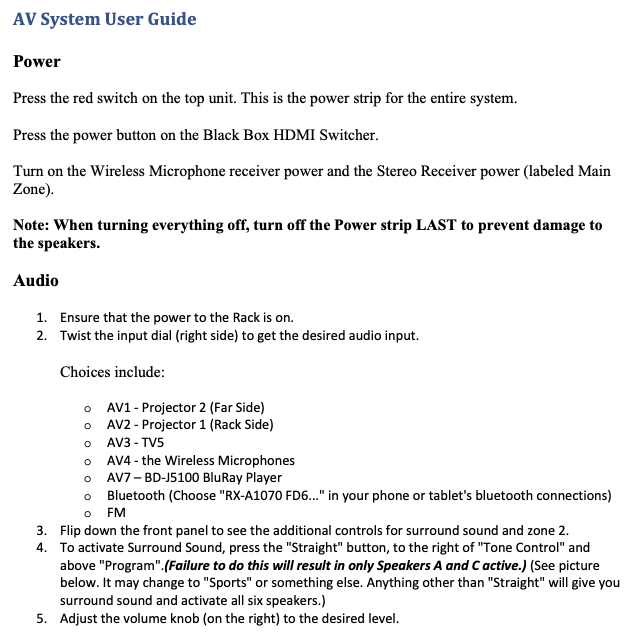
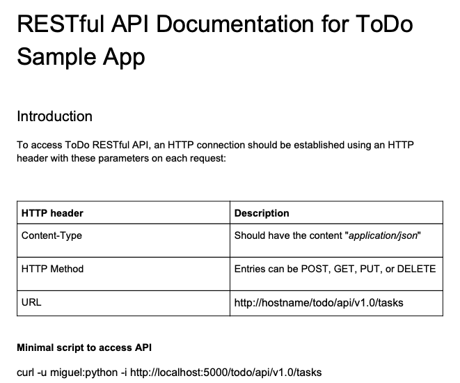
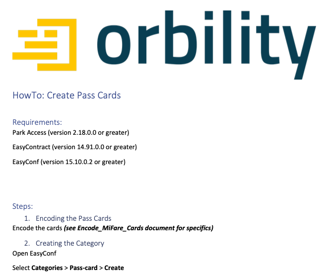

Technical Writing Samples
AV System in the Operations Response Center (ORC)
This guide describes how to use a complex A/V System for an Operations Response Center for a local Sheriff's office that was comprised of multiple video input and output channels, as well as multiple audio outputs, including an option for members of the press that enabled them to get good audio from the system, from the back of room. I designed this system as well as writing up the documentation for it.
AV System in the ORC PDFToDo sample app RESTful API Documentation
This describe what the process would be for developers connecting to this API for a Todo app. It includes the proper header infomation expected in the API request (either hard-coded in the application or by testing with Postman), as well as the expected output of each request. It also describes the API endpoints and server response codes generated by each type of request.
ToDo sample app RESTful API Documentation PDFCreate Pass Cards
This was for Orbilty, which sold parking systems to parking garages and municipalities that operated parking garages. This process describes how to encode a card that a user could present to the machine at the entrance and exit gates that regulated how often the customer could enter the lot.
Create Pass Cards PDF